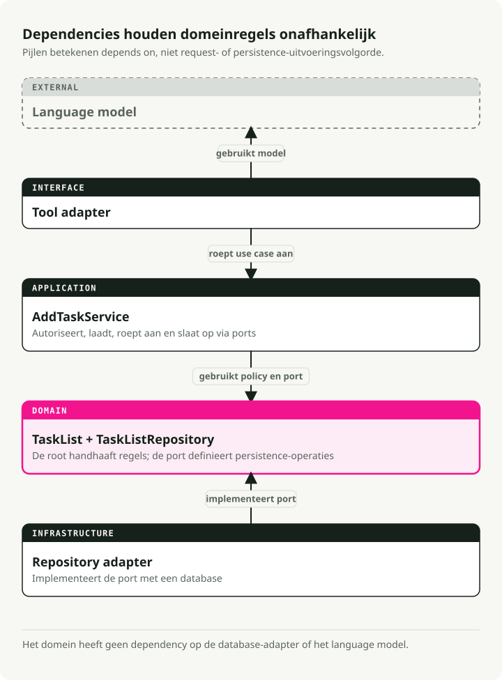
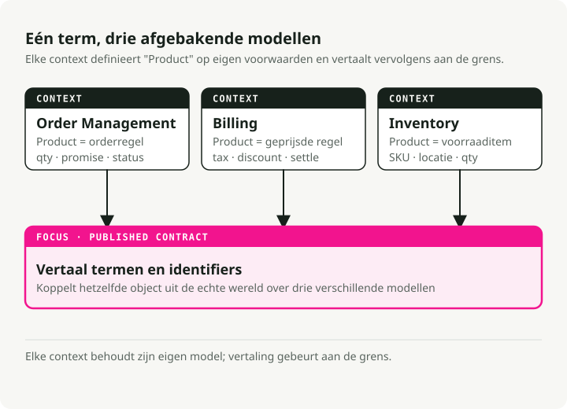
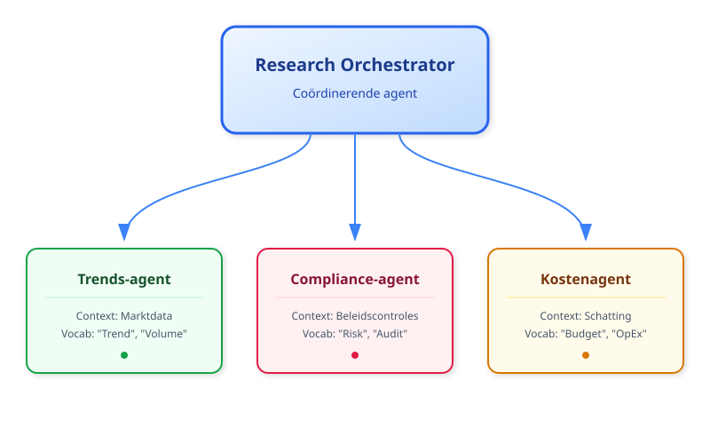
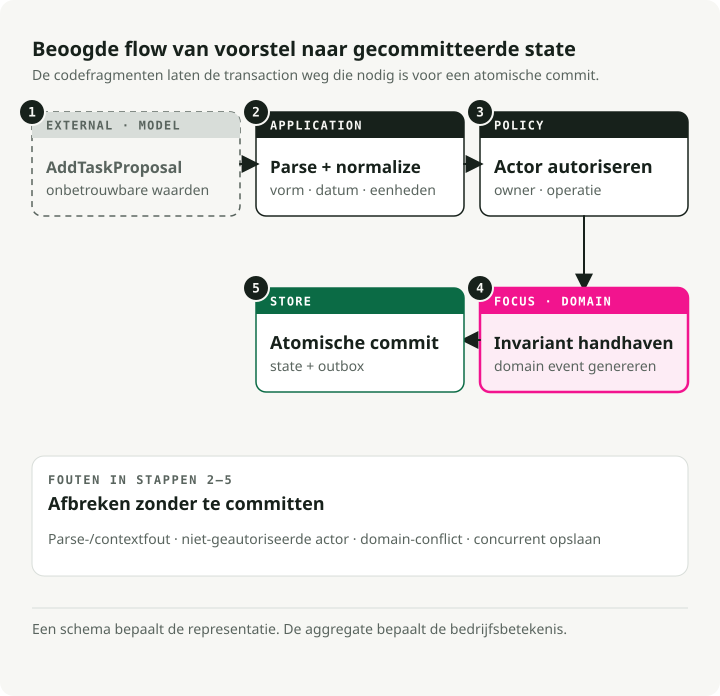
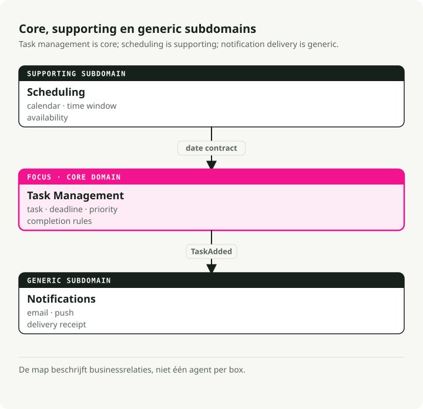

Automatische vertaling
Dit artikel is automatisch vertaald vanuit de oorspronkelijke Engelse versie.
Domain-Driven Design voor AI-agents: begrensde contexten, tools en bedrijfsregels
TL;DR
Domain-driven design (DDD) geeft AI-agentteams een gedeelde woordenschat en duidelijke scheidslijnen tussen subsystemen. Gebruik het wanneer je prompts zijn losgeraakt van het bedrijf en je regels verspreid liggen over templates.

Waarom domain-driven design belangrijk is voor AI-agents
De meeste agentprojecten falen niet omdat de code slecht is. Ze falen omdat de mensen die prompts schrijven en de mensen die het bedrijfsproces daadwerkelijk bezitten het niet eens kunnen worden over wat iets betekent. Compliance vraagt om een "policy check" en krijgt een methode process_data() terug. Niemand weet wat die doet, dus requirements drijven weg en het systeem verstijft.
DDD lost dit op door het bedrijfsdomein centraal te zetten. Niet het databaseschema. Niet de prompttemplate. Het echte proces uit de praktijk dat je probeert te modelleren. De praktische effecten:
- Gedeelde taal. Product, operations en engineering gebruiken allemaal dezelfde woorden. Wanneer compliance "refund request" zegt, is dat wat in je code, prompts en documentatie staat.
- Gerichte scope. Je bouwt wat ertoe doet: de kernworkflows en de regels waar iemand daadwerkelijk eigenaar van is. Minder glue code die breekt wanneer requirements verschuiven.
- Aanpasbaarheid. Wanneer beleid verandert, werk je één goed afgebakend deel bij in plaats van door een monoliet te moeten zoeken.
Dit is vooral belangrijk in domeinen waar regels vaak veranderen: finance, healthcare, gereguleerde operaties. DDD geeft je een redelijke kans om bij te blijven.
Strategische bouwblokken
DDD is een toolkit van patronen in plaats van één enkel idee. Het wordt meestal opgesplitst in twee helften:
- Strategisch ontwerp: het "grote plaatje". Grenzen, teams en de manier waarop systemen met elkaar praten definiëren. Dit is essentieel voor multi-agentsystemen.
- Tactisch ontwerp: de patronen op codeniveau (Entities, Aggregates) die de interne logica van je agent schoon houden.
De onderstaande concepten zijn degene die je in de praktijk dagelijks gebruikt.
Ubiquitaire taal
De gedeelde woordenschat die overal terugkomt: meetings, documentatie, prompts, methodenamen. Er is geen vertaallaag tussen "business speak" en "code speak".
Als compliance "policy check" zegt, is je methode run_policy_check(), niet process_data(). Als artsen "admit patient" zeggen, schrijf je admit_patient(), niet add_user().
class PatientRegistry:
def admit_patient(self, patient_id: str) -> None:
"""Admit a patient to the registry - term used by medical staff."""
...
Wanneer de taal in de code overeenkomt met de taal in de kamer, verschijnen requirementswijzigingen als voor de hand liggende hernoemingen op één plek. Je stopt met discussiëren over wat process_data had moeten doen.
Begrensde contexten
Grote systemen hebben expliciete grenzen nodig. Waarom? Omdat hetzelfde woord in verschillende delen van het bedrijf iets anders betekent.
Neem "product" in e-commerce. In de context Inventory is een product een catalogusitem met SKU's en voorraadtellingen. In de context Billing is het een regelitem met prijsregels en belastingberekeningen. In Order Management is het een hoeveelheid en een leveringsbelofte.
Begrensde contexten laten elk subdomein zijn eigen definitie hebben zonder conflict. Vertaallagen of interfaces verbinden ze wanneer ze met elkaar moeten praten.

Dit houdt elk model klein en voorkomt één gigantisch "product"-object dat tegelijk aan drie teams moet voldoen.
Entiteiten en value objects
Dit zijn de basisbouwstenen van je domeinmodel.
Entiteiten hebben een identiteit die in de tijd blijft bestaan. Een Task met ID 123 is dezelfde taak, ook als je de beschrijving, status of deadline wijzigt. Twee entiteiten zijn gelijk als ze dezelfde ID hebben, ongeacht hun attributen.
from pydantic import BaseModel
class SupportTicket(BaseModel):
ticket_id: str # This is the identity
customer: str
issue: str
status: str = "OPEN"
def close(self) -> None:
if self.status != "OPEN":
raise ValueError("Ticket already closed")
self.status = "CLOSED"
Value objects hebben geen identiteit. Ze worden volledig gedefinieerd door hun attributen. Twee objecten TimeSlot met dezelfde begin- en eindtijd zijn onderling uitwisselbaar. Value objects zijn immutable; in plaats van er één te muteren, maak je een nieuwe.
from pydantic import BaseModel
class TimeSlot(BaseModel):
start: str # e.g., "2025-10-18 09:00"
end: str # e.g., "2025-10-18 10:00"
@property
def duration(self) -> int:
# Compute duration from start to end
...
Gebruik entiteiten voor dingen met een lifecycle (Order, User, AgentSession). Gebruik value objects voor beschrijvingen en metingen (EmailAddress, Priority, Location).
Aggregates
Aggregates zijn clusters van gerelateerde entiteiten en value objects die als één geheel worden behandeld. Binnen een aggregate moeten bedrijfsregels altijd geldig blijven. Dat is precies het punt.
Elke aggregate heeft één aggregate root, de entiteit die de toegang regelt tot alles daarbinnen. Wil je iets in de aggregate wijzigen? Ga via de root. De root handhaaft invarianten zodat de aggregate niet in een kapotte toestand terechtkomt.
from datetime import date
from pydantic import BaseModel, Field
class Task(BaseModel):
id: str
description: str
completed: bool = False
class Plan(BaseModel): # This is the aggregate root
id: str
tasks: list[Task] = Field(default_factory=list)
def add_task(self, task: Task) -> None:
# Business rule enforced here: no duplicate task IDs
if any(t.id == task.id for t in self.tasks):
raise ValueError("Task ID already exists")
self.tasks.append(task)
Externe code raakt de lijst tasks nooit direct aan. Die roept altijd add_task() aan. Dat garandeert dat de regel "geen dubbele ID's" niet geschonden kan worden. Wanneer je naar een database opslaat, sla je doorgaans de hele aggregate in één keer op.
Repositories
Repositories verbergen de persistentielaag. Vanuit het perspectief van het domein roep je save(plan) en get(plan_id) aan. Het feit dat die calls uiteindelijk Postgres of Redis raken, is andermans probleem.
Dit levert twee voordelen op. Tests kunnen een in-memory repository gebruiken in plaats van databasecalls te mocken. En wanneer je SQLite uiteindelijk vervangt door iets zwaarders, verplaatsen de bedrijfsregels niet mee.
from abc import ABC, abstractmethod
from pydantic import BaseModel, Field
class Task(BaseModel):
id: str
description: str
completed: bool = False
class Plan(BaseModel):
id: str
tasks: list[Task] = Field(default_factory=list)
class PlanRepository(ABC):
"""Domain layer defines the interface."""
@abstractmethod
def save(self, plan: Plan) -> None:
...
@abstractmethod
def get(self, plan_id: str) -> Plan | None:
...
class InMemoryPlanRepository(PlanRepository):
"""Infrastructure layer provides the implementation."""
def __init__(self) -> None:
self.storage: dict[str, Plan] = {}
def save(self, plan: Plan) -> None:
self.storage[plan.id] = plan
def get(self, plan_id: str) -> Plan | None:
return self.storage.get(plan_id)
Je domeincode kent alleen PlanRepository (de interface). De infrastructuurlaag plugt de daadwerkelijke implementatie in.
Domeinevents
Domeinevents leggen belangrijke dingen vast die in je systeem zijn gebeurd. De naamgeving staat in de verleden tijd (OrderPlaced, TaskCompleted, PaymentFailed) omdat ze feiten beschrijven, geen commando's.
Events maken impliciete side effects expliciet. In plaats van dat de ene module direct een andere aanroept wanneer er iets gebeurt, genereert het domein een event. Andere delen van het systeem abonneren zich en reageren onafhankelijk.
from datetime import datetime
from pydantic import BaseModel
class TaskCompleted(BaseModel):
task_id: str
completed_at: datetime
Wanneer een taak klaar is, emit je TaskCompleted. Een notificatieservice kan op dit event luisteren en een e-mail versturen. Een rapportageservice kan het loggen voor analytics. Het belangrijke punt: de task aggregate hoeft niets te weten over e-mail of analytics. Die kondigt alleen aan wat er is gebeurd.
Zo blijft communicatie tussen contexten ontkoppeld. Het past ook natuurlijk bij multi-agentsystemen, omdat agents toch al via events op elkaar reageren.
DDD vertalen naar agentarchitecturen
Echte agentsystemen hebben multi-step workflows, LLM-output die een bepaald percentage van de tijd fout is, en requirements die elk kwartaal veranderen. De patronen van DDD passen toevallig goed bij die problemen.
Begrensde contexten worden agents of skills
Elke agent (of grote capability) is een begrensde context. Een research-orchestrator kan bijvoorbeeld drie gespecialiseerde agents coördineren:
- Trends Agent — verzamelt marktdata met zijn eigen woordenschat en tools
- Compliance Agent — voert policy checks uit met regulatoire terminologie
- Cost Agent — schat kosten met finance-specifieke regels
Elk heeft zijn eigen model, terminologie en invarianten. Ze communiceren via goed gedefinieerde interfaces of events.

Zelfs in een single-agent-systeem kun je interne contexten definiëren. Bijvoorbeeld een Planning-module en een Execution-module, elk met een eigen domeinmodel.
Prompts volgen de ubiquitaire taal
Gebruik domeintermen in system prompts, toolbeschrijvingen en function signatures. Als compliance-experts "policy check" zeggen, hoort exact die term in je prompts en in je code. Het voordeel is alledaags: wanneer een agenttrace run_policy_check laat zien, kan het complianceteam die lezen zonder vertaler.
Status wordt expliciete entiteiten
LLM's zijn vaak stateless, maar echte agents houden veel status bij: conversationsessies, doelen, tussenresultaten, tooloutput. Modelleer deze als entiteiten of value objects:
- entiteit
ConversationSessionmet ID en message history - entiteit
Taskdie werkonderdelen representeert - value object
ToolOutputvoor immutable resultaten
Zodra dit expliciete objecten zijn, kun je er validatie en bedrijfsregels aan koppelen. Een entiteit Task kan weigeren als voltooid gemarkeerd te worden totdat dependencies klaar zijn, zonder dat die regel in drie verschillende prompttemplates hoeft te leven.
Aggregates drukken agentplannen uit
Een aggregate root Plan beheert de takenlijst en handhaaft de limieten die voor het bedrijf relevant zijn. Wanneer een LLM voorstelt om 50 taken toe te voegen terwijl je beleid 10 is, weigert de aggregate de extra taken. Wanneer het dubbele werkzaamheden suggereert, wijst de aggregate die ook af. Het model mag enthousiast zijn; het domein blijft gezond.
Domeinevents sturen orkestratie aan
Agents genereren events zoals ResearchCompleted, ThresholdExceeded of PolicyViolationDetected. Andere agents of services abonneren zich en reageren. Niets is hard gekoppeld, en dat maakt het goedkoop om een nieuwe listener (of een nieuwe agent) toe te voegen.
Bedrijfsregels omhullen AI-acties
LLM-output stroomt via domeinservices of entiteitsmethoden in plaats van direct de database in. Als een model een refund buiten de beleidslimieten voorstelt, valideert en weigert je RefundRequest die. De LLM kan improviseren; de bedrijfsregels hebben het laatste woord.
De Anti-Corruption Layer (ACL)
Een LLM is probabilistisch en zit af en toe op verrassende manieren fout. Je domeinmodel moet deterministisch blijven. Die twee mogen niet direct samenkomen.
Dat is het werk van de Anti-Corruption Layer (ACL).

De ACL zit tussen het model en het domein. Ze vertaalt de ruwe output van de LLM naar de strikte typen die je domein verwacht.
- Neem op ruwe tekst of JSON van de LLM.
- Valideer structuur en typen met Pydantic-modellen.
- Schoon op waarden (geen negatieve prijzen, geen transacties met een datum in de toekomst, enz.).
- Vertaal DTO's (Data Transfer Objects) naar domeinentiteiten.
Als validatie faalt, weigert de ACL de data en stuurt ze de fout vaak terug naar de LLM zodat die het opnieuw kan proberen. Het punt is eenvoudig: alleen geldige data raakt ooit je kernbedrijfslogica.
Voorbeeld: een taakassistent gemodelleerd met DDD
We bouwen een persoonlijke taakassistent die verzoeken afhandelt zoals "Remind me to buy milk tomorrow" of "What's on my to-do list?". De walkthrough past de DDD-onderdelen hierboven één voor één toe.
1. Breng de contexten in kaart
Begin met het opsplitsen van het probleem in subdomeinen:
- Task Management — afhandeling van to-do-items en reminders (kerndomein)
- Scheduling — agenda-events en meetings
- Notifications — alerts en e-mails versturen
We richten ons eerst op Task Management. De andere kunnen zich ontwikkelen als aparte begrensde contexten of companion agents.

2. Spreek dezelfde taal
Kies de woordenschat samen met de mensen die daadwerkelijk eigenaar zijn van het proces (of gebruik gezond verstand voor een persoonlijke app): "task", "deadline", "reminder", "priority". Gebruik vervolgens precies die termen in prompttemplates, methodenamen en UI-labels. Er is geen aparte "business"-vertaling.
3. Leg entiteiten, value objects en events vast
Modelleer nu de kernconcepten:
- Entiteit:
Taskmet identiteit (id) en mutabele status (completed) - Value object: enum
Priority(immutable, gedefinieerd door zijn waarde) - Domeinevent:
TaskCompletedEventom te signaleren dat werk is afgerond
from datetime import datetime, date, timezone
from enum import Enum
from pydantic import BaseModel, Field
class Priority(Enum):
"""Value object: priority is defined by its value alone."""
LOW = 1
NORMAL = 2
HIGH = 3
class TaskCompletedEvent(BaseModel):
"""Domain event: announces a task was completed."""
task_id: str
time: datetime
class Task(BaseModel):
"""Entity: identity persists even as attributes change."""
id: str
description: str
created_at: datetime = Field(default_factory=lambda: datetime.now(timezone.utc))
due_date: date | None = None
priority: Priority = Priority.NORMAL
completed: bool = False
def mark_completed(self) -> TaskCompletedEvent:
"""Business rule: can't complete an already-completed task."""
if self.completed:
raise ValueError("Task is already completed.")
self.completed = True
return TaskCompletedEvent(task_id=self.id, time=datetime.now(timezone.utc))
De bedrijfsregel (je kunt een taak die al voltooid is niet opnieuw voltooien) leeft in de entiteitsmethode, niet in een prompttemplate.
4. Vorm de aggregate
De TaskList is onze aggregate root. Die bevat meerdere entiteiten Task en handhaaft consistentieregels over al deze heen. Alle wijzigingen lopen via de methoden van de root.
from datetime import date
from pydantic import BaseModel, Field
class Task(BaseModel):
id: str
description: str
due_date: date | None = None
completed: bool = False
class TaskList(BaseModel):
"""Aggregate root: enforces invariants across all tasks."""
owner: str
tasks: list[Task] = Field(default_factory=list)
def add_task(self, task: Task) -> None:
"""Business rule: no duplicate tasks on the same day."""
if any(
existing.description == task.description
and existing.due_date == task.due_date
for existing in self.tasks
):
raise ValueError("A similar task on that date already exists.")
self.tasks.append(task)
def get_pending(self) -> list[Task]:
"""Query helper: find tasks that aren't done yet."""
return [task for task in self.tasks if not task.completed]
TaskList.model_rebuild() # Resolve forward references for Pydantic.
Externe code raakt tasks nooit direct aan. Die gaat altijd via add_task() of een andere rootmethode, en dat is wat de regel "geen duplicaten" eerlijk afdwingt.
5. Verpak persistentie in een repository
De repository abstraheert storage. De domeinlaag weet niet of taken in memory leven of in Postgres.
from pydantic import BaseModel, Field
class Task(BaseModel):
id: str
description: str
completed: bool = False
class TaskList(BaseModel):
owner: str
tasks: list[Task] = Field(default_factory=list)
TaskList.model_rebuild() # Resolve forward references for Pydantic.
class TaskRepository:
"""Abstracts task storage - in-memory implementation for simplicity."""
def __init__(self) -> None:
self._data: dict[str, TaskList] = {}
def get_task_list(self, owner: str) -> TaskList:
"""Retrieve a user's task list, or create a new empty one."""
return self._data.get(owner, TaskList(owner=owner))
def save_task_list(self, task_list: TaskList) -> None:
"""Persist changes to the task list."""
self._data[task_list.owner] = task_list
In productie zou je dit vervangen door een implementatie bovenop een database (met SQLAlchemy of direct met Postgres) zonder de domeincode aan te raken.
6. Draai de flow
Wanneer een gebruiker een request doet, ziet de flow er zo uit:
from datetime import date, timedelta
from uuid import uuid4
from pydantic import BaseModel, Field
class Task(BaseModel):
id: str
description: str
due_date: date | None = None
completed: bool = False
class TaskList(BaseModel):
owner: str
tasks: list[Task] = Field(default_factory=list)
def add_task(self, task: Task) -> None:
if any(
existing.description == task.description
and existing.due_date == task.due_date
for existing in self.tasks
):
raise ValueError("A similar task on that date already exists.")
self.tasks.append(task)
class TaskRepository:
def __init__(self) -> None:
self._data: dict[str, TaskList] = {}
def get_task_list(self, owner: str) -> TaskList:
return self._data.get(owner, TaskList(owner=owner))
def save_task_list(self, task_list: TaskList) -> None:
self._data[task_list.owner] = task_list
TaskList.model_rebuild() # Resolve forward references for Pydantic.
# User says: "Remind me to buy milk tomorrow"
# (In reality, an LLM would parse this into structured data)
user_input = "Remind me to buy milk tomorrow"
intent = "add_task"
# Initialize repository
repo = TaskRepository()
if intent == "add_task":
# 1. Load the user's task list
task_list = repo.get_task_list(owner="User123")
# 2. Create a new task entity
task = Task(
id=str(uuid4()),
description="buy milk",
due_date=date.today() + timedelta(days=1),
)
# 3. Domain layer enforces business rules
try:
task_list.add_task(task)
repo.save_task_list(task_list)
print(f"Task '{task.description}' added for {task.due_date}.")
except Exception as exc:
print(f"Sorry, I couldn't add that task: {exc}")
De lagen blijven gescheiden:
- LLM-laag parseert natuurlijke taal naar gestructureerde data (intent + parameters)
- Domeinlaag handhaaft bedrijfsregels via entiteitsmethoden
- Repositorylaag verzorgt persistentie zonder in de domeinlogica te lekken
De LLM mag creatief zijn in het parsen, maar het domein bepaalt wat consistent is. Als die probeert een dubbele taak toe te voegen, wijst de aggregate root die af. Je hebt daarvoor geen speciale clausule in je prompt nodig.
Tooling om het model tot leven te brengen
DDD vereist geen speciale frameworks. Een paar tools maken de implementatie wel soepeler, vooral voor AI-agents.
FastAPI
FastAPI sluit netjes aan op DDD-lagen. Gebruik routers om begrensde contexten te scheiden (/tasks, /schedule), Pydantic-modellen voor validatie van requests en responses, en dependency injection om repositories te bedraden.
Structureer je project in lagen:
project/
├── domain/ # Pure business logic (entities, aggregates, value objects)
├── application/ # Use cases and command handlers
├── infrastructure/ # Repositories, databases, external APIs
└── interface/ # FastAPI routers and HTTP contracts
Deze gelaagdheid (soms "onion architecture" genoemd) voorkomt dat veranderingen door je hele codebase golven. De database vervangen betekent infrastructure/ aanpassen en verder niets. De UI veranderen betekent interface/ aanpassen en verder niets.
Pydantic en Pydantic AI
Pydantic handhaaft invarianten en valideert data tijdens runtime. Gebruik het voor entiteiten, value objects en vooral voor het valideren van LLM-output.
Pydantic AI gaat nog een stap verder: het dwingt af dat LLM-responses overeenkomen met je domeinschema's. Definieer een AddTaskCommand met verplichte velden, en Pydantic AI valideert de JSON-output van het model voordat je code die aanraakt.
Instructor is hier een andere optie. Het patcht OpenAI-clients (en andere clients) zodat ze direct Pydantic-modellen teruggeven, wat een lichte manier is om een Anti-Corruption Layer te implementeren.
DDD-helperbibliotheken
- DDDesign — biedt basisklassen voor entiteiten, repositories en value objects gebouwd op Pydantic
- Protean — een volledig framework voor DDD, CQRS en event sourcing als je iets wilt dat direct veel kant-en-klare features meebrengt
De meeste Python-ontwikkelaars slaan deze over en gebruiken gewone klassen met Pydantic, maar voor grote projecten zijn ze het verkennen waard.
Event-driven tooling
Voor domeinevents kun je denken aan:
- blinker — lichte in-process event dispatcher
- redis-py Pub/Sub of RabbitMQ — voor gedistribueerde events over services of agents heen
- asyncio event patterns — als je al async werkt
Events zijn essentieel voor multi-agentorkestratie. Eén agent emit ResearchCompleted; anderen abonneren zich en reageren. Geen enkele agent hoeft te weten wie er luistert.
Agentframeworks
LangChain, LangGraph, Haystack, Semantic Kernel, LlamaIndex, AutoGen, Google ADK, smolagents en CrewAI bieden allemaal structuur voor agentworkflows. Gebruik ze in je applicatie- of infrastructuurlaag en verpak ze in interfaces die eigendom zijn van je domeinlaag. Frameworks wisselen wordt dan een afgebakende wijziging.
Testen
Een praktisch voordeel van DDD: de domeinlaag test zonder dat de volledige stack draait.
- PyTest voor unit tests op entiteiten en aggregates
- Fake repositories (in-memory) voor integratietests
- LLM-stubs die vooraf bepaalde output teruggeven
Je domeincode zou nooit een live LLM nodig moeten hebben om tests te draaien. De LLM is een implementatiedetail. De tests valideren de bedrijfsregels.
Checklist om te beginnen
Een praktische volgorde van werken wanneer je een nieuw agentproject start:
- Interview domeinexperts. Stel de ubiquitaire taal op. Leg die vast.
- Breng begrensde contexten in kaart. Teken de subdomeinen en markeer waar ze met elkaar moeten praten. Begin met één kerncontext.
- Modelleer entiteiten en value objects. Welke dingen hebben identiteit? Welke dingen zijn alleen waarden? Bouw invarianten in hun methoden in.
- Definieer aggregate roots. Bundel gerelateerde entiteiten onder één root die consistentieregels afdwingt.
- Maak repository-interfaces. Implementeer storage nog niet. Definieer alleen
save()enget(). Het domein blijft onwetend over waar data leeft. - Genereer domeinevents. Voor betekenisvolle veranderingen (order geplaatst, taak voltooid) raise je events. Koppel listeners later waar nodig.
- Verpak LLM-output in schema's. Gebruik Pydantic-modellen om contracten af te dwingen. Free-form tekst mag niet in je domein lekken.
- Voeg orkestratie toe. Bouw application services die agents coördineren via gestructureerde commando's of events.
De regel die er echt toe doet: begin met het domein, niet met de tech stack. Begrijp eerst het bedrijfsprobleem. Modelleer het expliciet. Haal daarna de AI-tooling erbij om dat model te dienen.